السؤال 8

الجواب الصحيح: 1 و 3
يجب على السائق دائما مراقبة نظافة الأضواء و الاشتغال الجيد ديالها .
للاضواء الأمامية و حتى الأضواء الخلفية.
بما فيهم الأضواء الحمرين و أضواء التوقف .
25 سؤال
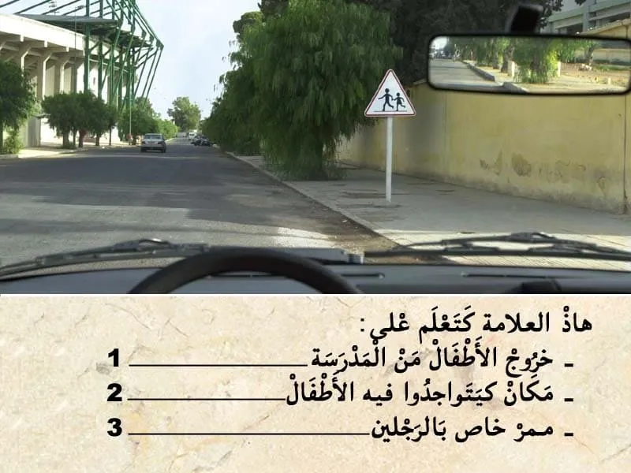
الجواب الصحيح: 2
هذا العلامة ديال الخطر.
👇-كتعلم على خطير مكان كيتواجدوا فيه الأطفال .
- الخطر داخل التجمع السكني كيكون على بعد 50 متر .
يعني الجواب الصحيح هو 2.
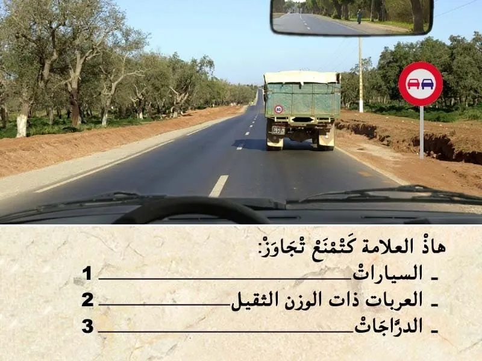
الجواب الصحيح: 1 و 2
هذا العلامة ديال المنع.
💥 كتعلم بلي ابتداء من العلامة التجاوز غادي يصبح ممنوع على جميع انواع العربات.
يعني ممنوع عليا نتجاوز اي عربة .
✅ يمكن لي نتجاوز دراجة .
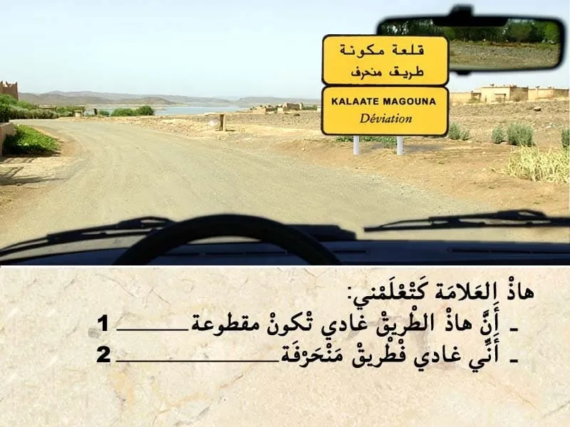
الجواب الصحيح: 2
هذا العلامة ديال الإرشاد. باللون الأصفر. "تشوير مؤقت"
- كتعلم على طريق منحرف .
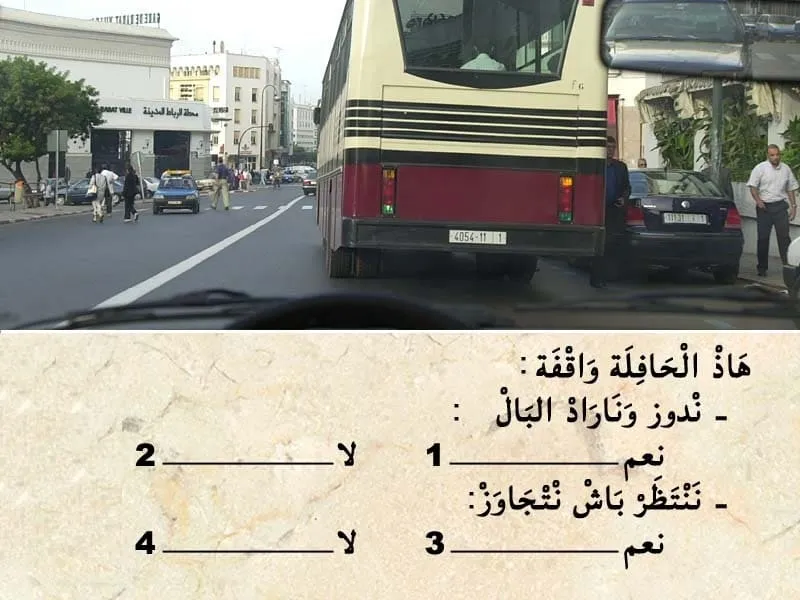
الجواب الصحيح: 2 و 3
قبل التجاوز . واجب عليا نراقب، تم نبه، تم ننحاز.
في هذا الحالة الطريق قدامي عامرة. و الخط للي في الوسط متاصل كينمع التجاوز .و بالتالي ما يمكنش لي نتجاوز .
✏️ غادي نبقى وراها حتى تصبح الطريق قدامي خاوية عاد نتجاوز .
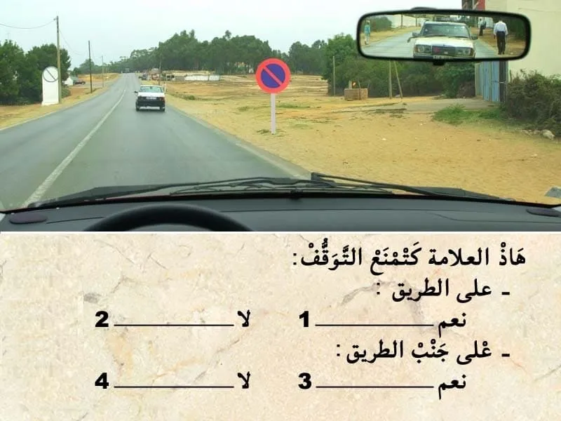
الجواب الصحيح: 1 و 3
هذا العلامة كتمنع التوقف على الطريق و حتى جنب الطريق. يعني ما يمكنش لي نوقف في الصف الثاني .
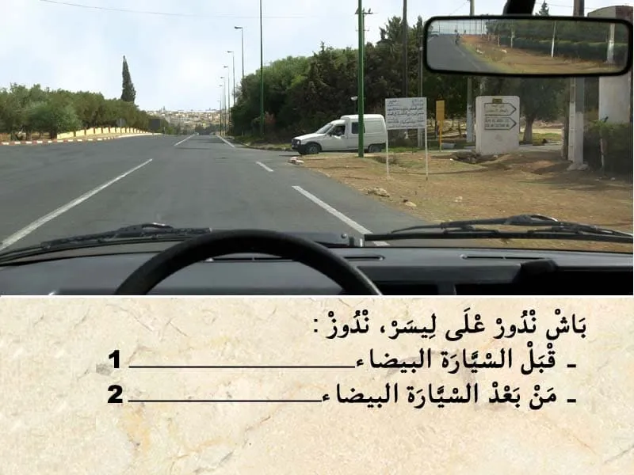
الجواب الصحيح: 2
فهذا الحالة عندي غياب التشوير الطرقي.
و بالتالي حق الأسبقية للي جاي من جهت ليمن .
يعني لي ليمن ديالوا خاوي يدوز هو الأول .
و بالتالي ندوز من بعد السيارة البيضاء.
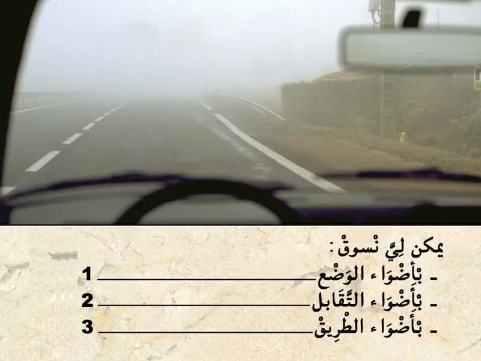
الجواب الصحيح: 1 و 2
في هذا الحالة كاين الضبابة و التالي من الواجب عليا نشغل الاضواء باش نكون واضح للأخرين .
في حالة الضبابة يمكن ليا نمشي :
-- بأضواء الوضع.
-- أضواء التقابل .
-- أضواء الضبابة ديال القدام و ديال الخلف .
الجواب الصحيح: 1 و 3
يجب على السائق دائما مراقبة نظافة الأضواء و الاشتغال الجيد ديالها .
للاضواء الأمامية و حتى الأضواء الخلفية.
بما فيهم الأضواء الحمرين و أضواء التوقف .
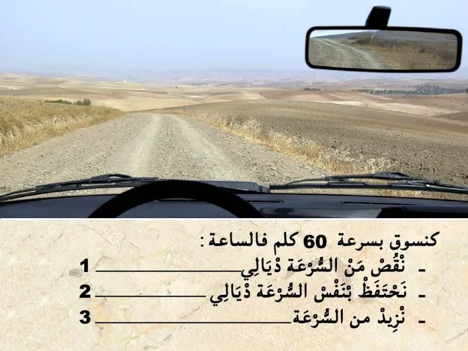
الجواب الصحيح: 1
في هذه الحالة كنسير في طريق غير معبدة و قدامي منعرج و بالتالي كاين احتمال ديال انزلاق المركبة في المنعرج نظرا لوجود الحصى على الطريق.
و بالتالي من الواجب عليا ننقص من السرعة.
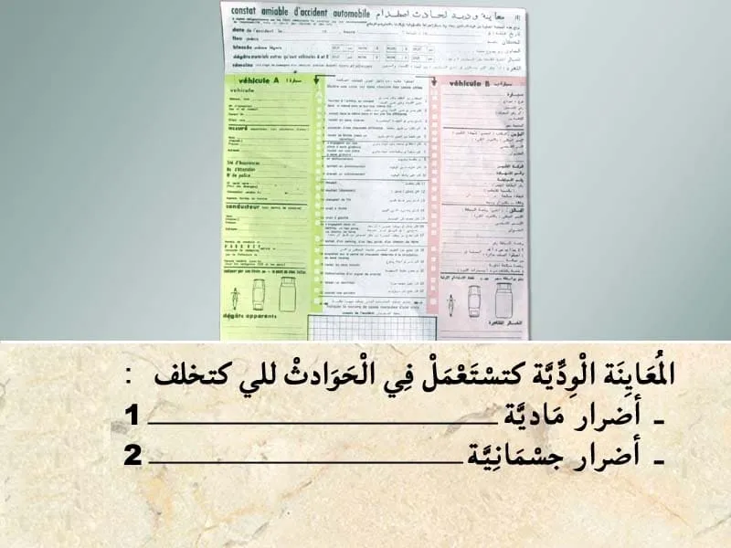
الجواب الصحيح: 1
✍عند وقوع حادثة سير أدت إلى خسائر مادية، يجب على السائق الحفاظ على الهدوء والحرص على ملء المعاينة الودية بعناية.
لا تعتبر المعاينة الودية إطلاقا اعترافا بالمسؤولية في حال حدوث أضرار بدنية، تقوم مصالح الأمن الوطني أو الدرك الملكي بإنجاز تقرير يرفق بهذا المحضر.
✍تعبر هذه المعاينة عن الأحداث والحقائق وتستخدم من أجل التعويضات اللازمة وهي ضمان لتسوية سريعة للحوادث لذا ينصح بالاحتفاظ بنموذج فارغ منها في المركبة.
✍يجب على السائق إبلاغ مؤمنه "شركة التأمين" عن الحادثة داخل أجل لا يتجاوز 5 أيام.
✅ يتكون محضر المعاينة الودية من العناصر الأساسية التالية:
✔ تاريخ الحادثة. ✔ المكان بالتحديد. ✔ المصابون حتى بإصابات خفيفة. ✔ الأضرار المادية التي تلحق بغير المركبتين أ و ب. ✔ الأضرار المادية التي تلحق بغير المركبتين أ و ب. ✔ الشهود. ✔ المركبة أ / المركبة ب. ✔ المركبة. ✔ المؤمن عليه. ✔ السائق. ✔ توضيح لنقطة الاصطدام الأصلية. ✔ الأضرار الظاهرة. ✔ الرسم التخطيطي. ✔ الملاحظات. ✔ التوقيعات.
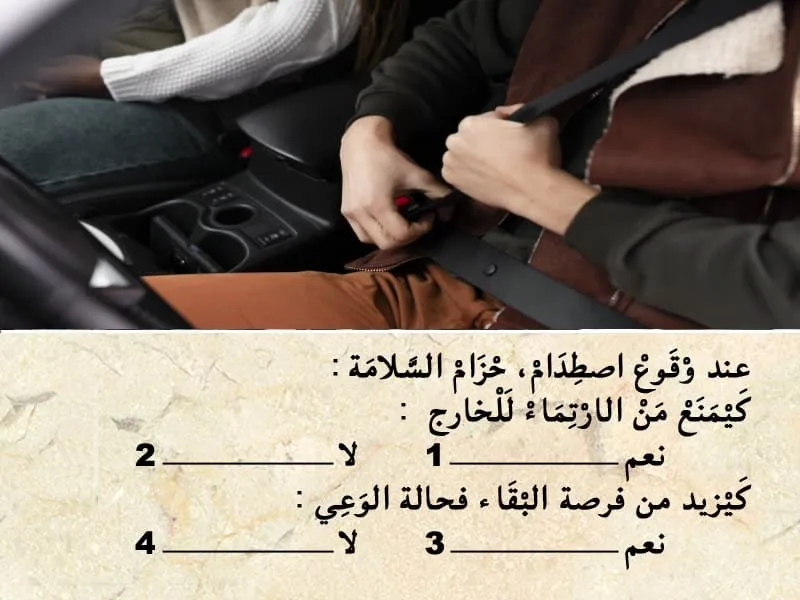
الجواب الصحيح: 1 و 3
حزام السلامة كيتبث الراكب في المقعد في حالة وقوع اصطدام. و بالتالي كيزيد من فرصة البقاء ف حالة الوعي .
و كيمنع السائق من الإرتماء للخارج.
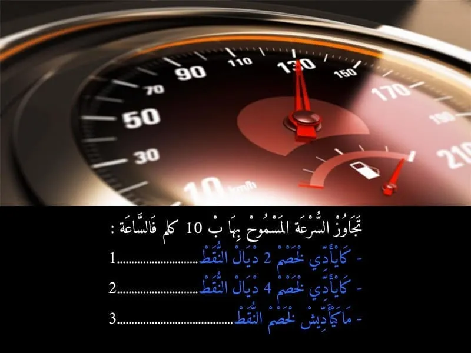
الجواب الصحيح: 3
تجاوز السرعة ب 10 كلم في الساعة كتعتبر مخالفة من الدرجة 3 بشرط ما تفوتش 20 كلم في الساعة و كتعرض السائق لغرامة مالية من 300 حتى ل 600 درهم .
و لكن بدون سحب النقط
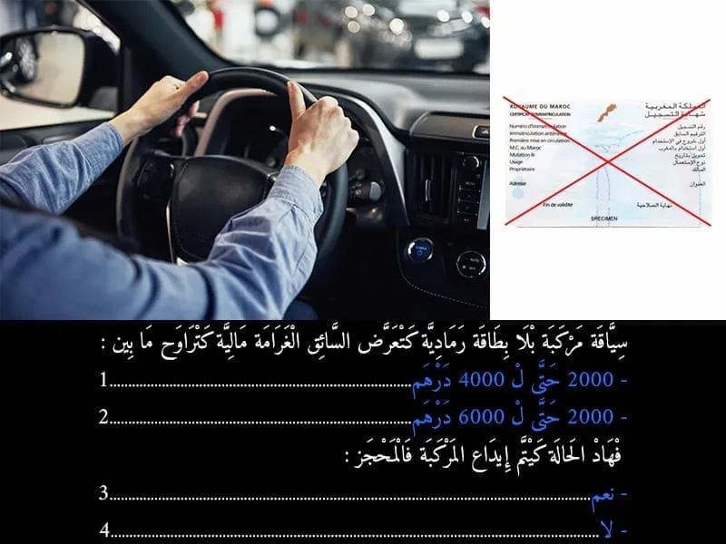
الجواب الصحيح: 2 و 3
في خالة سياقة مركبة بلا بطاقة رمادية كتعتبر مخالفة لعدم التوفر على سند الملكية الخاس بالمركبة .
و كيتعرض السائق لغرامة مالية كتراوح ما بين :
- 2000 حتى ل 6000 درهم .
و في هذا الحالة المركبة كيتم اداعها في المحجز.
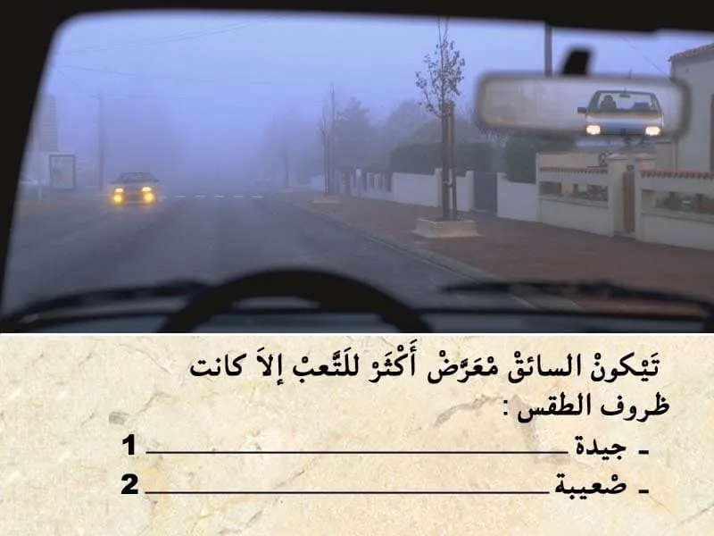
الجواب الصحيح: 2
الا كانت أحوال الطقس صعيبة السائق كيكون معرض أكثر للتعب.

الجواب الصحيح: 2 و 3
في هذا المنعرج باش نعلم بلي قربت يمكن لي نعلم بلي قربت بإشارة ضوئية بأضواء الطريق.
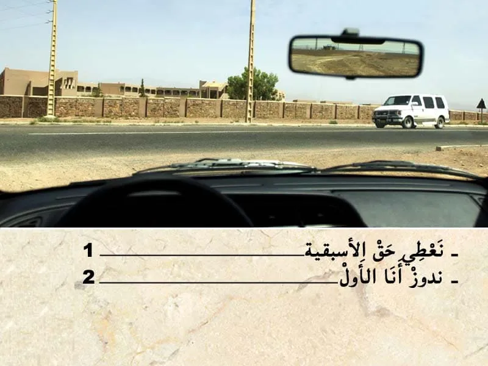
الجواب الصحيح: 1
هذا السيارة في الطريق الرئسية و انا خارج من الطريق ثانوية .
و بالتالي انا لي واجب عليا نعطي حق الأسبقية.
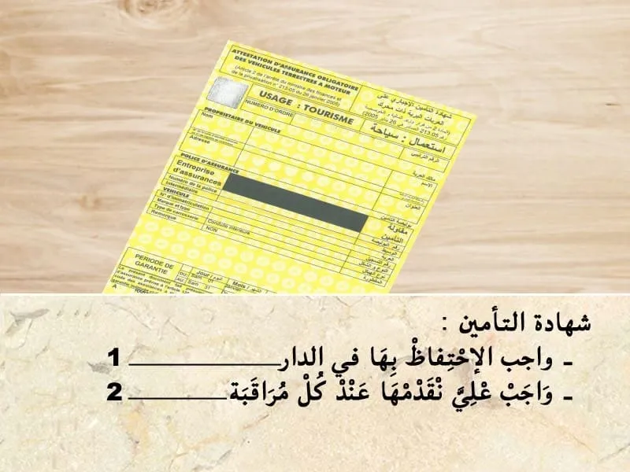
الجواب الصحيح: 2
اوراق السيارة من الواجب الاحتفاظ بهم مع السائق و الادلاء بيهم عند كل مراقبة.
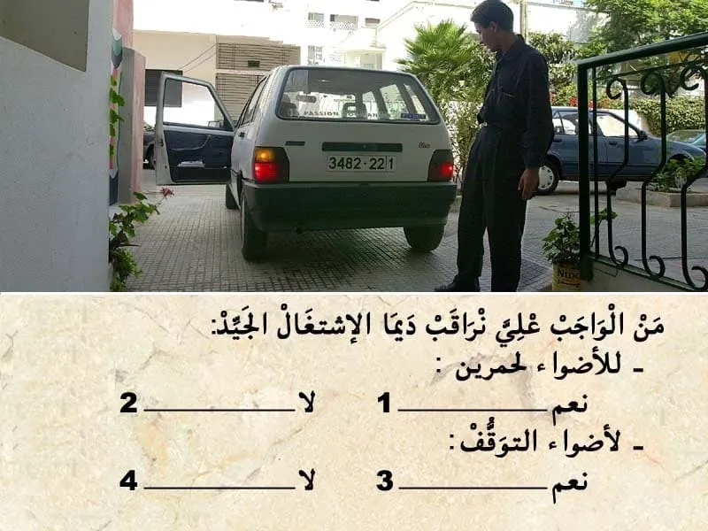
الجواب الصحيح: 1 و 3
يجب على السائق دائما مراقبة نظافة الأضواء و الاشتغال الجيد ديالها .
للاضواء الأمامية و حتى الأضواء الخلفية.
بما فيهم الأضواء الحمرين و أضواء التوقف .
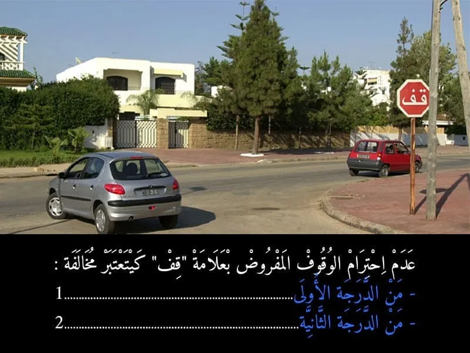
الجواب الصحيح: 1
عدم احترام الوقوف الاجباري المفروض بعلامة قف كيتعتبر مخالفة من الدرجة الاولى. و كيتم خصم 4 نقاط من رصيد رخصة السياقة . و غرامة مالية 700 درهم .
- في حالة اداء الغرامة في اجل 24 ساعة كيأدي السائق لي ارتكب المخالفة 400 درهم .
- أما في حالة الاداء في اجل 15 يوم فثمن الغرامة هو 500 درهم .
- أما في حالة عدم الادء في اجل 15 كتصبح الغرامة 700 درهم .

الجواب الصحيح: 1 و 3
في هذا الحالة مستعمل الطريق لي قبالتي ضايقني باضواء الطريق.
✅ يمكن لي نبه بإشارة ضوئية بأضواء الطريق.
✅ ننقص من السرعة .
✅ نشد ليمن ديالي .
✅ نشوف في الجهة ديال ليمن من الطريق ديالي .

الجواب الصحيح: 2 و 3
هذا السيارة خارجة من تجمع سكني و انا كنسير في الطريق الرئيسية.
و بالتالي واجب عليها تعطيني حق الأسبقية.

الجواب الصحيح: 1
هذا العلامة . هي علامة ديال الخطر .
- كتعلم على ممر على السكة الحديدية و هذا الممر بالحواجز .
و بالتالي الجواب الصحيح هو رقم 1.
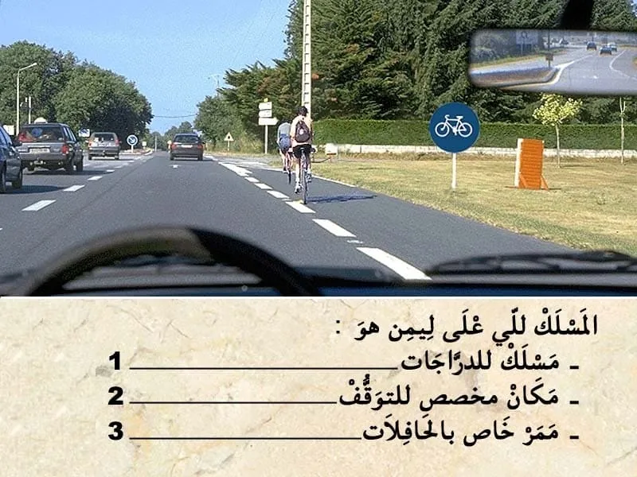
الجواب الصحيح: 1
هذا العلامة ديال الاجبار.
كتعلم بلي المسلك لي في اقصى اليمين هو مسلك خاص بالدراجات.
⛔ اي مسلك خاص بصنف معين ،كيكون ممنوع على الاصناف الأخرى.
و بالتالي ما يمكنش لي نوقف او نتوقف فيه.
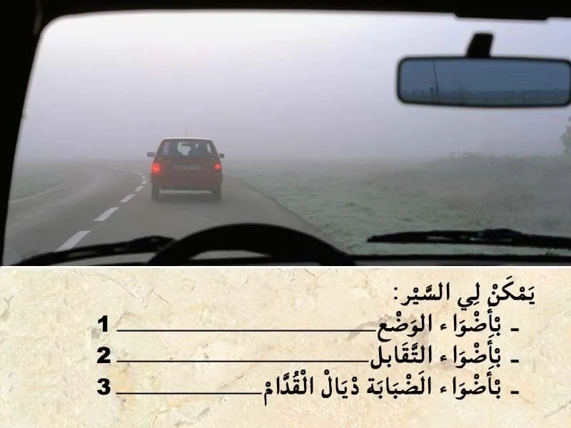
الجواب الصحيح: 1 و 2 و 3
في هذا الحالة كاين الضبابة و التالي من الواجب عليا نشغل الاضواء باش نكون واضح للأخرين .
في حالة الضبابة يمكن ليا نمشي :
-- بأضواء الوضع.
-- أضواء التقابل .
-- أضواء الضبابة ديال القدام و ديال الخلف .
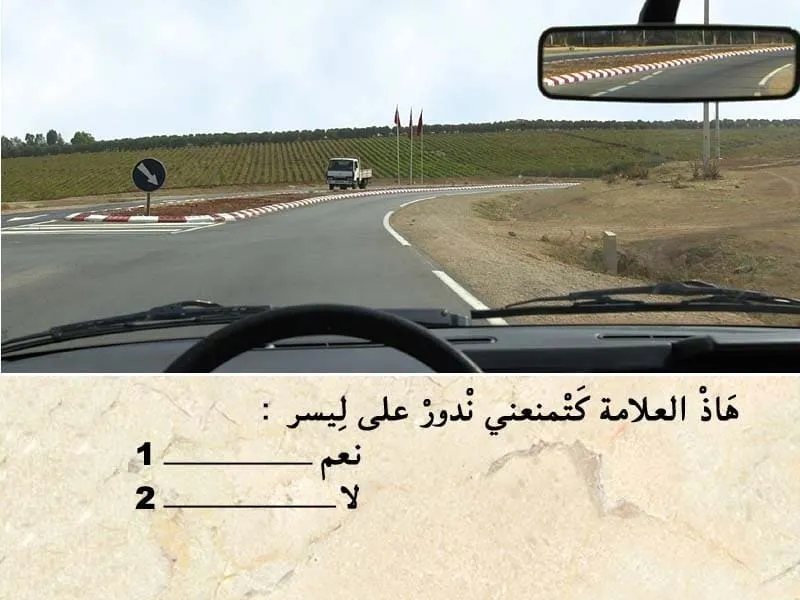
الجواب الصحيح: 2
هذا العلامة ديال الإجبار. سهم للأسفل .
- كيعلم بلي واجب عليا ناخد المسلك لي على ليمن في هذا ملتقى الطرق. الا كنت غادي نكمل السير للقدام .
- و ممنوع عليا نستعمل المسلك لي فيه الشاحنة.
العلامة كتجبرني من بعدها ماشي قبل منها .